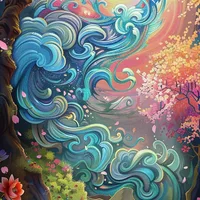
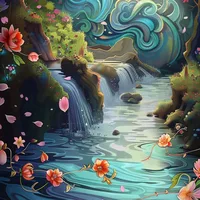
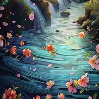

Kindy to the HSC
How it all links
Every unit flows into the next - follow the rivers.
One subject, four big rivers
Geography is not a pile of separate topics. The ideas you meet in Junior and Middle School keep flowing - they come back bigger and deeper in Stage 5, the Elective and right through to your HSC.
Pick a river below to see where it starts, where it goes, and all the goals, places and skills that branch off it.
How to read the map
- Each coloured river is one big idea that grows over the years
- Each stop is a unit - click it to open that unit
- JSJunior School - Kindy to Stage 2, Years K-4
- MSMiddle School - Stage 3 and Stage 4, Years 5-8
- SSSenior School - Stage 5 and Stage 6, Years 9-12
- Dashed stops are Elective units - an extra choice in Years 9-10
- A tall white stop is shared - two rivers meet there
Swipe sideways to see the whole map
Follow the river
Places and people
What makes a place a good place to live - and who decides how it changes?
Sustainable Development Goals it connects to
Places to explore
- Gosford and the Central Coast growing up
- Western Sydney's new airport city
- Melbourne and Vienna - the world's most liveable cities?
- Megacities like Tokyo, Lagos and Jakarta
- Our Pacific neighbours - Fiji, PNG and Timor-Leste
- A country town that is shrinking - or booming
Skills you build
- Census data (ABS QuickStats)
- Population pyramids
- Land use maps
- Surveys and interviews
- Street-by-street fieldwork
Follow the river
Connections and a fairer world
How are we all connected - and how do we make the world fairer?

Junior SchoolPeople are connected to places and groupsSustainable Development Goals it connects to
Places to explore
- Where your phone is really made
- Coffee and chocolate - who gets paid?
- The Human Development Index around the world
- Aid and trade across the Pacific
- Borders and disputes like the South China Sea
- Fast fashion - where your old clothes end up
Skills you build
- Flow maps
- Choropleth maps
- Our World in Data charts
- Comparing development indicators
- Checking sources for bias
Follow the river
Earth and its landscapes
How does the Earth shape the land - and how do we feed the world from it?

Junior SchoolGeographical information is used to understand the worldSustainable Development Goals it connects to
Places to explore
- The Blue Mountains - built by wind and water
- Deserts like the Sahara and Atacama
- Antarctica and the polar ice
- The Pacific Ring of Fire
- A working farm near you
- The Amazon - lungs of the planet
Skills you build
- Topographic maps and contours
- Cross-sections
- Climate graphs
- Google Earth in 3D
- Field sketches
Follow the river
Water and the living world
Who gets the water - and how do we look after rivers, reefs and oceans?

Junior SchoolCaring for Australia's environmentsSustainable Development Goals it connects to
Places to explore
- The Murray-Darling Basin
- The Great Barrier Reef
- Brisbane Water - our own catchment
- Plastic in the Pacific Ocean
- The Mekong River
- Rising seas in Tuvalu
Skills you build
- Catchment maps
- Rainfall and river graphs
- Water quality testing
- Satellite images over time
- Before and after photos
What you carry the whole way
Every river uses the same geographer's toolkit. You start using these in Kindy and you are still using them in your HSC exam.
- You, the geographer
- Maps
- Fieldwork
- Graphs and statistics
- Spatial technologies
- Visual representations
- Place
- Space
- Environment
- Interconnection
- Scale
- Sustainability
- Change
How every inquiry works
Get outside - fieldwork every stage
Geography happens outside the classroom too. Fieldwork is part of every stage of the course.